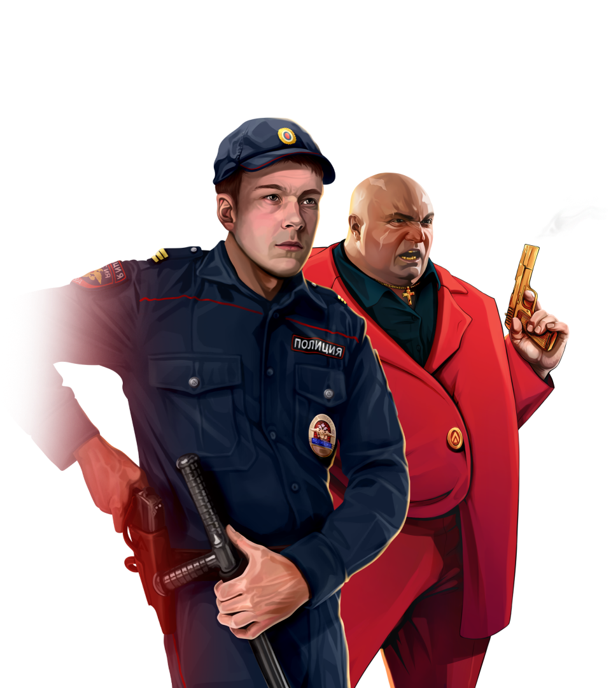

01
12 фракций
Государственные структуры, армия, медиа и криминальные объединения — выбирай, где раскрыть персонажа.

GTA: San Andreas · SA-MP 0.3.7
Городской RolePlay, в котором ты сам выбираешь путь — от государственной службы до криминального мира. Создай персонажа и начни с первой сцены.
Всё для твоей роли
Погружайся в игру без лишних барьеров: понятный клиент, голосовое общение и механики, которые дополняют твою историю.
Государственные структуры, армия, медиа и криминальные объединения — выбирай, где раскрыть персонажа.
Общайся с персонажами рядом через /voice и настраивай радиус голоса под игровую ситуацию.
CEF-клиент заменяет стандартные окна на удобные игровые интерфейсы, карту и телефон.
Установи автозвук и включай свои треки в машине — музыку услышат игроки поблизости.
Не собирай клиент по частям: нужные компоненты уже внутри фирменной сборки Premazing.
Правила, новости и помощь собраны в одном месте. Вопросы решаются в игре и в Discord.
Три шага до первой сцены
Установи нашу готовую сборку, добавь сервер в избранное и создай персонажа. Всё необходимое уже ждёт внутри.
Подготовка
Нужны GTA: San Andreas 1.0 US и SA-MP 0.3.7. Наша сборка уже включает необходимые компоненты.
Один архив
Распакуй сборку в новую папку. Не устанавливай её поверх другой игры или сторонних модов.
Первый вход
В SA-MP выбери «Add Server», вставь адрес и подключись. После первого входа создай персонажа — и история начнётся.
Сервер не публикуется в общем списке — добавляй адрес вручную.
Premazing в движении
Официальный трейлер проекта: город, фракции и фирменные возможности — чуть больше минуты, чтобы решиться на первый вход.
Реальные кадры из игры
Скриншоты из игры: улицы, погони, спецоперации и повседневная жизнь персонажей. Нажми на кадр, чтобы открыть его целиком.
Официальное сообщество
Новости, обновления клиента, поддержка и игроки уже в Discord. Присоединяйся до первого входа — так проще найти ответы и будущих союзников.